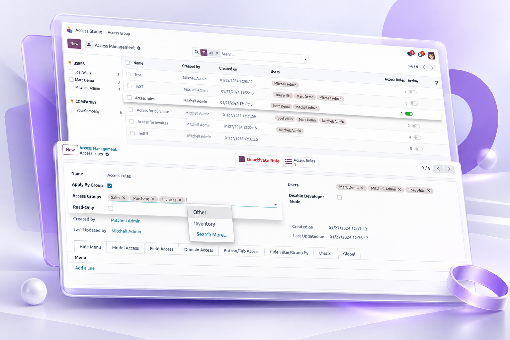

Centralize and configure granular access rules for Odoo users, models and interface elements from one dedicated management profile.
Manage multiple access rules from a centralized Odoo 19 interface.

Access Management • Odoo 19
Configure the areas covered by the module from the same access-management profile.
Menu AccessControl the visibility of selected menus for users assigned to a profile. |
Model AccessConfigure read, create, write and delete restrictions for selected models. |
Field AccessManage field visibility and read/write restrictions at field level. |
Domain RulesApply additional record-level restrictions using configured domains. |
Buttons & TabsConfigure restrictions for form buttons and notebook pages. |
Search PanelControl the visibility of configured search-panel fields. |
Chatter AccessConfigure access to messages, attachments, followers and activities. |
Global ControlsApply profile-level restrictions across selected models. |
|
A centralized approach to granular access configuration.
Flexible profiles • Granular rules • Centralized administration
Access Management • Odoo 19